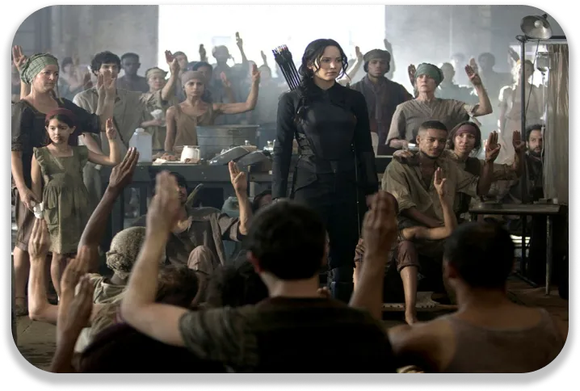
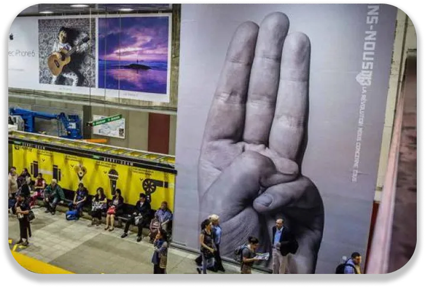

Depuis la sortie du film Hunger Games, les jeunes osent faire entendre leurs voix. Dans le monde entier, ils protestent contre une forme d’autorité.
Extrait du film Hunger Games : l'Embrassement
Un exemple qui parle aux jeunes
L’héroïne se rebelle contre son état hostile et manipulateur. Elle se risque à dénoncer cette manipulation par sa popularité. Tout part de trois doigts levés, signe d’adieu transformé en signe de rébellion. Katniss, la protagoniste est la première à l’utiliser et lance involontairement une rébellion. D’autres citoyens osent faire pareil par saturation des agissements du Capitole. Une rébellion se forme petit à petit grâce aux médias. Snow, le dirigeant doit l’empêcher pour garder le contrôle de la population. Les plus courageux n’ont pas peur des représailles et osent s’opposer. Certains meurent pour la révolte et les autres redoublent d’efforts pour gagner.
Le courage de se battre
Katniss s’engage pour l’arrêt des Jeux et de la manipulation de Snow. Elle se révolte également contre le non-respect des plus pauvres. Sa ténacité inspire la jeunesse à se battre aussi contre les injustices. A la sortie du deuxième opus, certains ont arboré le signe populaire. Les jeunes des pays oppressés et ceux les soutenant ont osés comme Katniss. Ceux qui oseront pourront espérer faire changer les choses. Malgré les dangers, les pertes, résister c’est espérer et exister. Il suffit d’une personne qui ose et provoque quelque chose. Un changement même moindre pourra se faire, avec de la volonté et ténacité.
Faire passer un message
Cette sage de film pousse à la révolte pour la justice. Mais elle fait aussi passer un message aux jeunes de pays plus démocratiques. Il faut que la jeunesse ose faire entendre sa voix comme Katniss. Que ce soit pour des idées politique, écologique, personnelles, etc. Hunger Games leur montre qu’ils peuvent se battre pour ce qui est important pour eux. Les jeunes ne doivent pas se laisser influencer par les médias. Les adultes ont une plus grande expérience. Mais ils ne savent pas ce qui est mieux pour chaque jeune. Alors, il faut oser et risquer. Lorsqu’on se fait entendre, on peut changer les choses.